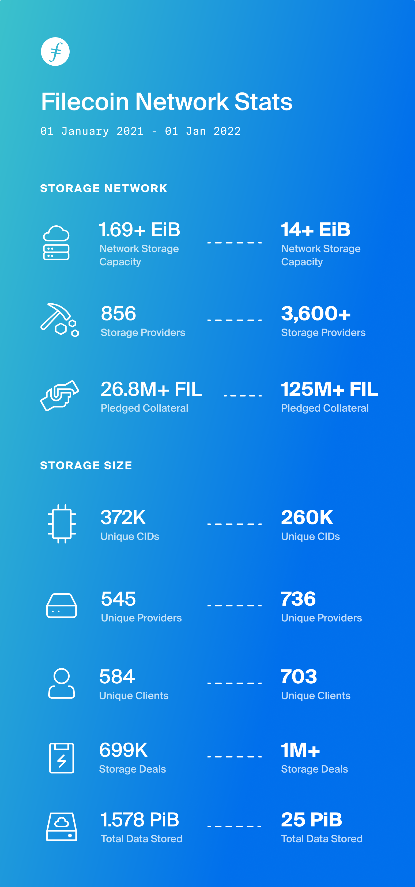
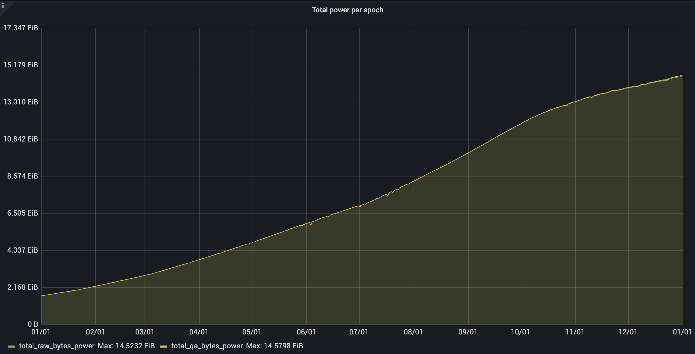
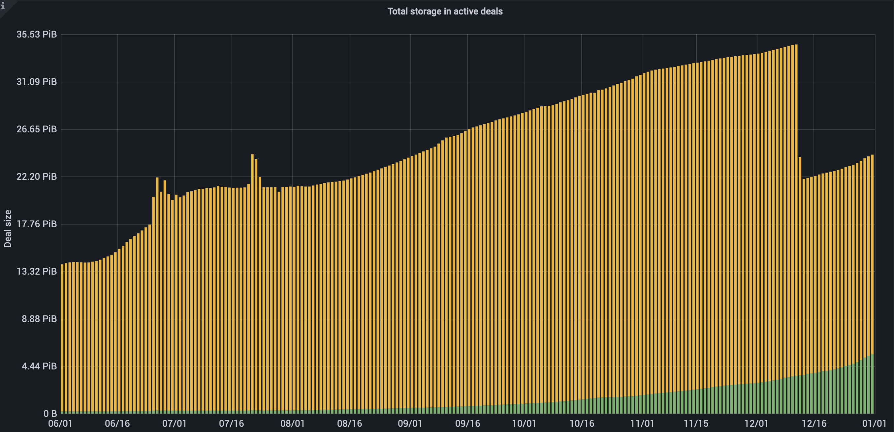

Filecoin in 2021: Looking Back at a Year of Exponential Growth
The Filecoin network surpassed a combined storage capacity of 14+ EiB with the help of 3,600+ storage providers from around the globe. The community also welcomed over 400 new applications built by the community of 7,000 FIlecoin developers. All that within little more than a year since mainnet launch.



Numbers don’t tell the full story, though! This year’s extraordinary growth also brought important developments across the Filecoin ecosystem. Some major milestones were:
Research and Engineering
Over the past year, the Filecoin protocol and network made significant leaps forward, including the execution of five coordinated network upgrades, shipping 12 Filecoin Improvement Proposals (FIPs), and bringing two additional Filecoin protocol implementations to mainnet (Venus and Forest) to join Lotus! Highlights include allowing for off-chain verification of Proofs of SpaceTime, SnarkPack for proof aggregations, and designing a mechanism for the easy upgrade of Committed Capacity sectors to include real-world data (scheduled to launch on mainnet in February!).
Since mainnet launch, Filecoin has made significant upgrades to storage provider robustness and ease of use, chain capacity, and bandwidth — more than doubling daily capacity onboarding rate!
Filecoin Implementations
Lotus
As the reference implementation of the Filecoin protocol and one of the main market implementations, Lotus published 26 releases, supported 11 network upgrades, and 18 FIPs since mainnet launch. New features in 2021 included the market runtime architecture(split miner and market nodes) and v1 API, improvements to the sealing scheduler, optimized sealing pipelines, and better / faster deal making for both storage & retrieval deals with user configurable resource control. Thanks to all those improvements, and more, Lotus is now providing a stronger and easier to use foundation for storage providers to continuously grow their power by committing storage capacity to the Filecoin Network, and to provide robust storage service to the clients.
Check out lotus releases’ highlights for more information!
Proofs Improvements and zk-SNARKs
Non-interactive zero-knowledge proofs (zk-SNARKs) are a cryptographic technique that allows a prover to convince verifiers that the prover knows some piece of information without revealing the information itself.
The zk-SNARKs initiative for Filecoin project has been ongoing for about two years, even before mainnet launch, but much progress has been made in the past twelve months, including the launch of a dedicated zk-SNARKs for the World website where more information can be found.
Recent updates include enabling storage providers to resume sealing after interruptions, the ability to deploy distributed Window PoSt, multicore-SDR (optimized/fast sealing), integration of a new Bls12-381 implementation, and general increase of performance across the board. Rewriting the GPU tree from scratch resulted in massive performance gains such as a nearly 50% speedup.
Overall, the codebase has been restructured for better modularity and readability, with added support for more architectures such as ARM64 and Apple M, and an added API for proof aggregation. zk-SNARK generation has been optimized by more than 80%.
Hyperdrive Upgrade
In June 2021, the Filecoin v13 ‘HyperDrive’ Network upgrade unlocked a 10-25x increase in storage onboarding capacity, making Filecoin the first major L1 chain to deploy a significant chain bandwidth increase, just eight months after mainnet launch. Since then, daily storage capacity onboarding has doubled to over 60 PiB/day, putting it on track to reach around 20 EiB by the end of 2021.
This upgrade was possible thanks to innovations in the Filecoin proofs system. Since well before mainnet launch, the Filecoin network has been operating at maximum capacity due to massive storage provider demand, making Filecoin the largest SNARK system in production, producing and verifying over five million SNARKs on a daily basis.
From December 2020 to April 2021, CryptoNetLab and CyptoComputeLab designed and implemented SnarkPack, a novel strategy to scale SNARK proofs through aggregation, unlocking increased scalability, and relieving network congestion. SnarkPack landed in FIP13, bringing a 10-25x improvement in overall chain capacity to the Filecoin network.
Retrieval Markets
Retrieval Markets is one of the most exciting platforms being built on top of Filecoin. It offers CDN-like experience in a fully decentralized way where people can join to offer bandwidth and geographic location to their end users.
The year kicked off with an intensive Research Workshop focused on exploring the possibilities and opportunities for Retrieval Markets. Over 20 researchers met in a VR World to discuss and design new Data Delivery Metering, Graph Forming, Opportunistic Deployments, and Retrieval Market CryptoEconomics.
In April, the first Retrieval Market Builders Summit was held with the participation of the Lotus, PegaSys, Myel, Digital Mob, Textile, Chainsafe, Protocol Labs, IPFS, FilSwan, ResNetLab, and Estuary teams. Currently, there are several teams building different implementations of Retrieval Market solutions, and you can see their progress every other week at the Retrieval Markets Demo Days.
NFT.Storage
NFT.Storage launched in April 2021, providing off-chain storage of NFT metadata and assets in a free, simple service. Data uploaded to NFT.Storage’s HTTP endpoint is stored on Filecoin and made available to the public IPFS network. The service is free to use, with the vision to eventually persist NFT data in a decentralized manner as a public good.
The service also provides users with properly formatted IPFS URIs to reference their metadata in their smart contracts. This is a critical step to ensure their NFTs are truly making a permanent reference to the intended data. It guarantees the use of “ipfs://” URLs rather than “http://” URLs, which are centralized and can break if the server goes away, DNS is down, or the data’s location changes.
The product has grown quickly since launch, and now has over 21 million uploads stored in Filecoin across over 16,000 users. These NFTs include those minted by some of the largest marketplaces and minting services in the space, including OpenSea, OneOf, NFTPort, Makersplace, Jigstack, Curio, and more.
There’s a ton of exciting new feature work in progress, from a faster HTTP endpoint for accessing NFT data stored on IPFS, to a large directory uploader app for 10,000 NFT drops, to delegated authorization for marketplaces and SDKs to have end-users upload directly to NFT.Storage. Later this year, the team aims to utilize decentralized technology breakthroughs like smart contracts and DAOs to progress the product vision to persist NFT data in a decentralized way. The team is also working on niftysave, an effort to index all NFTs and save their metadata and assets onto Filecoin to ensure no NFT data is lost.
Filecoin Green
In 2021, Filecoin Green formed as a brand new project and had made great strides in turning Filecoin into the world’s most verifiably sustainable blockchain!
Working with Storage Providers in order to better understand energy use on the network, the team developed an open source energy use model and launched the filecoin.energy dashboard. These tools make it easy for anyone in the world to estimate the energy use both for the network as a whole and for specific SPs.
The team also developed the ability to match SP energy use with renewables like wind and solar. Filecoin Green worked with the Filrep team to integrate these purchases into the reputation system, and partnered with the Energy Web foundation to record renewable energy purchases on their blockchain. This makes it possible for storage clients to see not only how much energy is being used by their chosen SP, but verify what renewable energy is being purchased to store their files down to the level of an individual solar or wind farm!
As these efforts have ramped up, Filecoin Green has been received by the community as the leader in verifiable sustainability for crypto systems. Coindesk covered how these strategies could turn both Filecoin and other blockchains green. The head of EWF tweeted that Filecoin is “at the head of the pack” in sustainable crypto.
The network has shared its sustainability strategy and verification work along with the establishment of a community of SPs and developers on the #fil-green channel!
FVM
The Filecoin Virtual Machine (FVM) is bringing smart contracts to the Filecoin network. This major technical advancement will make it possible to deploy trustless programmable storage use cases natively on Filecoin. As a WASM-based polyglot virtual machine, it can host existing EVM smart contracts in addition to the native Filecoin runtime with little to no adaptation, thanks to the EVM foreign runtime support.
The FVM opens up tons of opportunities for the network. The most exciting ones include: Data DAOs, decentralized compute, alternative storage markets, perpetual and crowdfunded storage, L2 solutions, cross-chain bridges, collateral lending programs, and more. If you’re attracted to any of these challenges, feel free to reach out!
The introduction of the FVM is a gradual process. The FVM team at Protocol Labs is currently completing Milestone 0, an internal testing and experimentation milestone aiming to launch canary Lotus nodes on mainnet, running built-in actors on the FVM.
Next, Milestone 1 will officially transition the execution layer of mainnet to the FVM. It is estimated to land by the end of Q1 2022, and its scope will be limited to built-in actors. Milestone 2 will introduce the ability to deploy user-defined contracts, supporting both native actors and EVM smart contracts. It is expected to land by the end of Q2 2022.
Subsequent milestones will focus on progressively migrating more and more Filecoin functionality out of system space to user space, to enable higher amounts of customization, innovation, and easier programmability. Timelines may vary depending on many factors.
VDF
A collaboration between Protocol Labs, Ethereum Foundation, Filecoin Foundation, Electric Coin Company (ECC), and Supranational was launched. The goal is to produce an efficient and cost-effective computational VDF (Verifiable Delay Function). This will involve developing both fast evaluation, as in sequential computation, and proving, as in parallel computation.
The intention is to develop optimized CPU (evaluation), GPU (proving), and eventually ASIC (evaluation and proving) implementations. Currently two proving systems are being explored: Halo2, which is published by ECC, and Nova, published by Microsoft Research.
Generalized proving ASICs and GPU optimizations are expected to improve the economic cost of general proving — not just VDF proofs — in either of these systems by 5-10x.
Protocol Labs and Cryptosat are also collaborating to explore the possibility of a space VDF. One high-level idea is to exploit the speed of light as a ‘hard speed limit’ on communication latency — potentially allowing Protocol Labs to achieve a better Amax(Attacker’s Maximum Advantage) than theoretically possible from algorithmic and hardware optimizations, based on computational speed.
In this model, delay is based on minimum communication time between satellites in verifiable positions.
Drand
Drand, the distributed randomness beacon used by Filecoin’s leader elections, celebrated its one-year anniversary earlier this year, completing more than one million rounds of undisrupted service!
Drand, which is powered by its network of independent partners, the League of Entropy (LoE), expanded since the Filecoin launch last October and added two new members to the consortium.
The LoE is expanding currently, and looking for new members to join the mission. Get in touch with them if you’re ready to contribute to the mission of making Drand a foundational Internet protocol for verifiable randomness.
Drand is also being updated with new features in order to serve a wider variety of applications. Drand will adopt an “unchained” randomness generation method for partial signatures. This will enable developers to build clients that are able to encrypt messages in the future using a technique known as Time Lock Encryption, which can be leveraged to mitigate threats related to MEV (on Ethereum) and front running attacks.
Drand will soon also provide support for higher frequency randomness beacons, running in parallel to the current 30-second beacon. This update will enable Drand to be leveraged by a broader set of Web2 and Web3 use cases.
Web3.Storage
Web3.Storage launched in August 2021, designed to make it easy for developers to integrate IPFS and Filecoin with their projects. They don’t need to run any infrastructure and are able to use simple interfaces including a JS client library and HTTP API.
With over 5,000 users and 9 million uploads since launch, Web3.Storage is growing quickly. As a result, developers new to Web3 are experiencing first-hand how content addressing and trustless storage enables lighter backend infrastructure, decentralization, and less lock-in, while experienced Web3 developers are able to quickly integrate IPFS and Filecoin with their production dapps.
The product has big ambitions to unlock new paradigms and patterns of how applications, users, and data interact with each other while continuing to provide an intuitive user experience, so stay tuned!
Estuary
The work for Estuary kicked off in March 2021 and has grown into a reliable, scalable solution for participating in the Filecoin network today. Estuary nodes have their own libp2p stack with full IPFS and Filecoin features to help anyone make Filecoin storage deals in a multitude of ways.
Estuary has made over 86,750 successful storage deals, has over half a billion objects registered, stored over 784.22 TiB of files, collaborates with many companies and groups within the Filecoin ecosystem, and stores data with over 143 storage providers from around the world.
Those interested can run their own Estuary nodes in the cloud. Web developers can clone or fork the web client and provide a similar experience for their own users, or they can just use the hosted API to make storage deals with any public data they have.
Textile
Textile, a company that is rolling out tools to make it faster and easier for developers to build decentralized apps on IPFS and Filecoin, launched permissionless Filecoin storage bridges on Ethereum, Polygon, and NEAR. A Filecoin Deal Auctions pilot for clients to efficiently onboard massive datasets to the network was also rolled out with currently 2TiB per day and growing ~25% per week. As of October 1 2021, the pilot has reached 205TB in active Filecoin deals.
Hackathons
In 2021, the Filecoin and IPFS Hackathon program reached and connected 11,000+ developers and entrepreneurs worldwide. And more than 5,000 people have built projects in Filecoin and IPFS hackathons over the last 12 months.
The Filecoin ecosystem participated in 30+ events, such as HackFS and Scaling Ethereum early in the year, as well as other events sponsored by ETHGlobal and Chainlink that have encouraged developers and entrepreneurs to buidl. The hackathon program also piloted the multi-event Filecoin Asia Hackathon Season and participated in Polygon BUIDL IT as well as several student-run initiatives. Many of these events resulted in hundreds of sign ups and project submissions.
Filecoin and IPFS’s goal continues to be to help connect, build, and catalyse the growth of promising projects by advancing them to these growing grants and accelerator programs. Some of the most amazing projects went on to secure millions of dollars in the form of grants and seed funding. Here are some favorites:
- Arlequin is a metaverse fully community driven with a Paint-to-Earn system. Users can collect cute 3D animals, known as Arlee which are NFTs powered by the Flow blockchain and use IPFS (via web3.storage) to store their visual aspect.
- Geo Web is a set of open protocols and property rights for anchoring digital content to physical land. The Geo Web will bring digital media, games, data, commerce, and NFTs into the physical world as shared experiences rather than siloed applications.
- img8 is a decentralized image processing and optimization protocol built for decentralized storage networks. It empowers Web3 builders and designers to retrieve images easily and with increased security, faster speed and high resolution images.
A full list of all winning Hackathon projects will be published soon - stay tuned!
The team runs 5 or more hackathons each month with an increased focus on events lasting several weeks that educate and onboard new developers into Web3, frequently partnering with collaborators across the entire Filecoin ecosystem.
Visit hackathons.filecoin.io to learn more about the upcoming opportunities to build in 2022 and be sure to sign up for the mailing list.
Web3 Collaborations
Filecoin continues to grow and gain adoption as the de facto storage layer of Web3, and developers continue to explore and expand upon all the possibilities of the protocol.
Recent months have been filled with exciting collaborations with the Web3 community. The collaborations are multi-faceted and include joint grant programs for developers, filecoin storage bridges, joint hackathons, and investments.
With smart contract systems, Filecoin is now integrated with Ethereum, Polygon, NEAR, Hedera Hashgraph, Flow, and more projects on the way. Developers in these ecosystems have discovered the ease of using Filecoin for data storage.
Chainlink, a blockchain oracle service, is a key collaborator and integrated with Filecoin in May. The network recently launched an extensive joint grant program to spur the development of new applications, such as data bounties and miner insurance.
Other exciting collaborators include video solutions: Livepeer’s co-mining initiative and Videocoin’s video NFTs.
Filecoin was added to the Data Economy Index (using RenFIL) in Sept 2021 as a fundamental and key driver of the Web3 stack as a result of these ongoing collaborative efforts.
New Startups in the Filecoin Ecosystem
The End-to-End builders funnel is rapidly scaling: the Filecoin ecosystem collaborates with builders globally to deliver a seamless experience from Hackathon to Scale.
Startups are supercharged by combining the comprehensive hackathon and grants programs with a rapidly expanding accelerator program that includes Techstars, Tachyon, DeFi Alliance, Outlier Ventures, among others.
Almost 60 startups have now graduated from partner accelerator programs over the past year and many of those founders grew through Filecoin hackathons or received dedicated grants as they progressed through the Builders Funnel. There are an incredible number of amazing founders in the ecosystem and Filecoin is excited to support them with capital and resources as they scale.
In February 2021, Filecoin Launchpad hosted its demo day with 13 teams from 11 countries around the world emerging from a 12-week immersive accelerator bridging the IPFS, Filecoin, and Ethereum communities. The presentations from the first cohort as well as the 20 teams from 13 countries who participated in the second cohort can be watched online. Applications for Tachyon 6 winter cohort are now being accepted.
Filecoin teamed up with LongHash Ventures to launch the Filecoin Frontier Accelerator. You can learn more about the program here and watch 11 amazing team presentations from the first demo day in April.
Filecoin collaborated with Outlier Ventures to launch the Filecoin Base Camp accelerator to catalyze the growth of new ecosystem projects that are building the next generation of applications that will drive adoption of Web3.
Early 2022 will be kickstarted with the Techstars Filecoin Accelerator, DeFi Alliance, and another strong collaboration with Tachyon. All of which are currently finalizing their applications. If you are a builder: Apply now to build the future of Web3 or feel free to share your vision with us at funding@protocol.ai.
Storage Providers
Straight out of the gate, the Filecoin network committed storage at a much faster rate than initially anticipated and very quickly in April achieved maximum baseline minting level. Since then the network has only gone from strength to strength.
In July 2021, the Filecoin community agreed to approve a new FIP to rebrand and replace the “miner” terminology that was somewhat limited and narrow-focused, and the more suitable “storage provider” term was adopted. In the journey to onboard more Filecoin storage users, this rebranding will help emphasize the utility and value of the network to enterprise customers.
Since inception, there has been an incredible growth of new storage providers coming online around the world. To date, there are more than 3,500 Filecoin systems up and running and between five to ten new systems being onboarded daily.
With 30-60 PiB of new capacity coming online daily, there is a vast amount of space available to store useful data. The cost of storing data on Filecoin is nearly free with the amount of capacity that is available today.
In June, the storage provider community stepped up and came together to form a new storage provider working group in North America and Asia. One of the first implementations of the working group was to support the community in their efforts to create better documentation and tooling. Since then we built working groups in Europe, North America, Asia, Korea and Japan!
In August, a new Filecoin bounty board was created to support that effort. Since then external experts have been participating in delivering new best practices. New ideas or requests are always welcome on the board.
To support the ecosystem in building new storage providers, we built out a new accelerator program dedicated to train and onboard 50 new Storage Providers a year. Apply today at https://www.web3espa.io!
ARG
In February, The Application Research Group (ARG) started experimenting with prototypes using Filecoin, IPFS, libp2p, and IPLD. As of now, the ARG has created an open-source framework for building websites compatible with IPFS out of the box, developer examples with well-known ecosystem partners like Textile, and high-fidelity prototypes such as an offline Filecoin+Ledger Wallet.
In March, the ARG created Estuary to help improve the experience around making Filecoin storage deals. In the near future, many network operators around the world may be running Estuary nodes and making Filecoin storage deals for as much meaningful public data as possible.
Asia Expansion
Asia is a critical area for expansion of the Filecoin and IPFS ecosystems and growth in the region continued at pace in several key countries during the first year after launch. Several key initiatives that focus on the region launched this year.
Asia Hackathon Season is a multi-month hackathon series aimed to identify, accelerate, and highlight the innovative Filecon and IPFS development work being done by startups and developers in Asia. Filecoin partnered with Wanxiang, Polygon, Dapper Labs, and other major regional collaborators to put the first 2021 season together. The program is still underway but has already seen many exciting submissions from contributors across the region.
To expand Filecoin’s presence in Korea and Japan communities, local language outreach and community building in Korea and Japan rolled out in August, and several meetups and events were hosted by the community as part of Filecoin Orbit.
Another notable initiative has been the promotion of geographical diversification from storage providers in China to other countries, as well as building key strategic relationships across Asia, such as NFTStar and more.
Much More to Come
The Filecoin network officially went live in October 2020. It has been just over 1 year since launch, and the community has already delivered a vibrant ecosystem of applications, tooling, use cases, integrations, and more. And the best part is — this is just the beginning. There is more than enough room for more builders, entrepreneurs, founders, designers, thinkers, creatives, developers, and more. Together, we’re building new paradigms for the real world. Join the Filecoin Community and work with others around the world on building the future of decentralized technology.